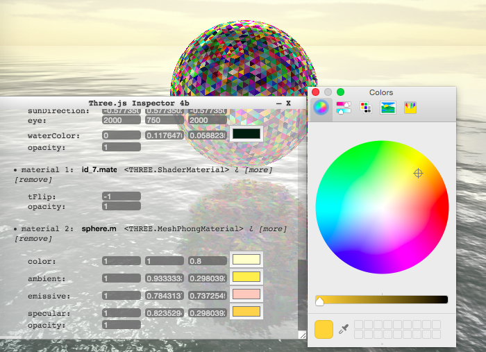
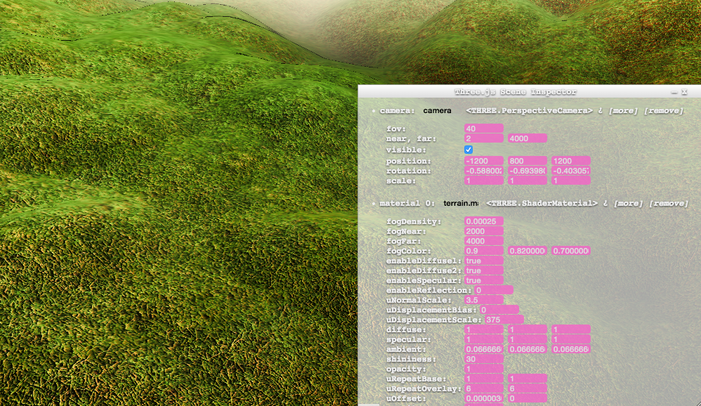

Three.js Inspector is a badly maintained hack to quickly inspect and edit Three.js scenes, deployed the as a bookmarklets widget created by @blurspline.
Someday this could become an npm module, till then this page serves as a temporary shelter for these experiments. To use drag the bookmarklet into your toolbar (done once only as updates to ThreeInspector are automatic). Then click on the bookmarklet to activate the inspector while running three.js
Of course, you can also load them with your development experiments like this.
<script src="https://cdn.rawgit.com/zz85/zz85-bookmarklets/master/js/ThreeInspector.js"></script>
Color types is now detected from Lights, Materials, Color typed Uniforms in ShaderMaterials. It is integrated with HTML5 color input type which utilizes the system's color picker. This allows easy yet rich way to edit colors, as well as getting access to the system's color dropper.

Allow better integration with websites using shadow dom support. If shadow dom support is detected, styles and doms are inserted into the shadowRoot, allowing a cleaner encapsulation of styles, and preventing the host application's styles to override those in ThreeInpector.
detects cameras and shader materials uniforms
